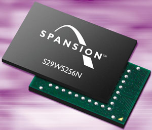

Владислав Шаров
Производители электронного оборудования просто вынуждены использовать в своей продукции широкую номенклатуру запоминающих устройств. Все они отличаются по скорости, потребляемой мощности, стоимости и ряду других, зачастую не менее важных параметров. Каждый тип памяти по одной или нескольким характеристикам предпочтительнее для одних приложений, но совсем не рекомендуется для других. Если для динамической памяти главные параметры - цена и емкость, то для статической наиболее важна скорость. Поиск универсального решения для запоминающих устройств занимает сегодня ученых, наверное, не меньше, чем в свое время алхимиков - поиски философского камня.
Рынок портативных устройств развивается сегодня особенно быстрыми темпами. Неотъемлемый элемент всех этих электронных приборов - память для хранения программ и данных. Требования, предъявляемые к памяти для портативных устройств, общеизвестны: это низкое энергопотребление, высокая скорость работы, большая емкость и энергонезависимость, т. е. способность сохранять информацию при отключении источника питания. Поскольку до недавнего времени обеспечить должный уровень всех этих параметров не представлялось возможным, то приходилось искать компромиссное решение. Например, чтобы добиться высокой скорости обработки данных, можно использовать статическую память SRAM (Static RAM) с низким энергопотреблением, что, однако, ограничивает ее быстродействие. Для обеспечения энергонезависимости в этом случае дополнительно потребуется либо источник питания (гальванический элемент или аккумулятор), либо электрически программируемое постоянное запоминающее устройство - EEPROM (Electrically Erasable Programmable ROM).
Если ограничения на скорость работы не слишком жесткие, наиболее эффективным решением обычно считается флэш-память, одна из разновидностей энергонезависимой памяти. Как и у EEPROM, содержимое флэш-памяти программируется электрическим способом, однако основные ее преимущества по сравнению с той же EEPROM - высокая скорость доступа и довольно быстрое стирание информации. Благодаря невысокой цене и приемлемым параметрам флэш-память широко используется в КПК, ноутбуках, персональных компьютерах, сотовых телефонах, сетевом оборудовании, принтерах и т. д.
Тем не менее, несмотря на большие возможности флэш-памяти, параллельно с ней развиваются несколько других типов памяти, например, ферроэлектрическая (Ferroelectric RAM, FRAM) и магниторезистивная (Magnetic RAM, MRAM).
К новым микросхемам для мобильных устройств предъявляются вполне определенные требования. Во-первых, ячейка такой памяти должна иметь микронные размеры, обеспечивать совместимость с существующими производственными линиями и быть не дороже элементов динамической памяти DRAM (Dynamic RAM). Во-вторых, кристалл должен потреблять как можно меньше энергии, чтобы его можно было использовать в мобильных устройствах. И наконец, он должен обеспечивать высокую скорость записи и чтения информации.
Флэш-память
По мере того, как приложения для работы с Интернетом и большими объемами данных все теснее интегрируются с мобильными устройствами, для работы таких приложений требуются все более сложные и высокоемкие микросхемы флэш-памяти. Кроме того, эти микросхемы должны потреблять мало энергии и быть небольшими по размеру, что позволит продлить срок службы батарей мобильных устройств и сохранить компактность их корпусов. Изобретателем флэш-памяти считается корпорация Intel (http://www.intel.com), а название технологии произошло от метода стирания - весь объем сразу. Впоследствии микросхемы флэш-памяти избавились от этого недостатка, и теперь стирание происходит побайтно или постранично.
Основной элемент конструкции флэш-ячейки - транзистор с плавающим затвором. Фактически второй затвор такого транзистора играет роль накопителя электронов - конденсатора. Он расположен между затвором и каналом и изолирован от проводящих зон слоем диоксида кремния. Ячейка с многослойным затвором - самый старый и одновременно простой тип ячейки памяти EEPROM. В основе ее лежит полевой транзистор, несколько, впрочем, отличающийся от классического аналога - в нем есть еще один, так называемый плавающий затвор. На плавающий затвор за счет двух квантовых процессов помещаются заряды с разными значениями, которые влияют на поле основного, или управляющего затвора.
Сегодня почти три четверти рынка флэш-памяти занимают микросхемы типа NOR (Not OR). Каждая ячейка в такой микросхеме подключена к двум перпендикулярным линиям - битов (bit line) и слов (word line). Суть логической операции NOR - в переходе линии битов в состояние "0", если хотя бы один из подсоединенных к ней транзисторов-ячеек включен (иначе говоря, проводит ток). Селекция читаемой ячейки выполняется с помощью линии слов. Все ячейки памяти NOR, согласно правилам, подключены к своим битовым линиям параллельно.
Другой тип подсоединения называется NAND (Not AND). В этом случае битовая линия переходит в состояние "0", если все транзисторы, подключенные к ней, проводят ток. Теперь ячейки подсоединяются к битовой линии сериями, что снижает эффективность и скорость операции чтения (поскольку уменьшается ток каждой ячейки), зато повышает скорость стирания и программирования. Чтобы снизить негативный эффект малой скорости чтения, микросхемы NAND снабжаются внутренней регистровой кэш-памятью. Благодаря особому способу подсоединения ячеек удается добиться более компактной упаковки, чем в случае с параллельной архитектурой NOR-микросхем.
В двухтранзисторных ячейках второй транзистор позволяет избавиться от многих недостатков, присущих обычным однотранзисторным ячейкам. Второй транзистор используется для изоляции ячейки от битовой линии. Высокие требования к производственному процессу и пространственным размерам ячейки компенсируются исчезновением проблем, связанных с избыточным удалением, когда одна ячейка блокирует работу всех остальных на общей битовой линии. Напряжения стирания и программирования несколько снижены за счет формирования небольшой зоны более тонкого слоя оксида кремния. Ток программирования достигает всего 10 пА - значительный шаг вперед по сравнению с описанным выше типом ячейки (1 мА). В этом нет ничего удивительного - в двухтранзисторной ячейке все операции с плавающим затвором основаны на эффекте туннелирования. Чтобы запрограммировать ячейку, отрицательное высокое напряжение подается на управляющий затвор (электроны туннелируют на плавающий затвор), а чтобы ее стереть - положительное напряжение подается на сток (электроны туннелируют с плавающего затвора на сток).
Продукция семейства StrataFlash, впервые выпущенная в 1997 г. корпорацией Intel, представляет собой высокоэкономичное решение для выполнения программного кода и записи-считывания данных на одном кристалле. Intel представила микросхему, выполненную по многоуровневой сотовой технологии (Multi-Level Cell, MLC), благодаря которой емкость каждой ячейки увеличивается вдвое. Это достигается за счет того, что StrataFlash оперирует четырьмя уровнями заряда, кодирующими два бита. Уровень заряда определяет напряжение, которое необходимо приложить к управляющему затвору, чтобы открыть транзистор.
| Флэш-память Intel StrataFlash.
|
Корпорации AMD (http://www.amd.com) и Fujitsu (http://www.fujitsu.com), создавшие совместное предприятие Spansion (http://www.spansion.com), продвигают технологию флэш-памяти Mirror Bit, которая позволяет хранить два бита информации на одной ячейке памяти. По имеющейся информации, подобная ячейка представляет собой "сэндвич", состоящий из общего затвора, подключенного к линии слов, и изготовленных из полупроводников с одинаковым типом носителя двух стоков/истоков, которые подсоединяются к двум соседним линиям битов. В промежутке между стоками/истоками сформирован трехслойный "плавающий затвор" (тонкий слой изолирующего оксида, потом нитрид кремния, затем снова оксидный слой). "Плавающий затвор" лишь самыми краями перекрывается с зонами стоков/истоков. Материал плавающего затвора обладает одним замечательным свойством - он способствует локализации заряда и препятствует его растеканию по полупроводнику. Это позволило создать в плавающем затворе отдельные зоны, в которых сохраняются разные заряды, не взаимодействующие между собой. Соответственно, приложив напряжение к левым стоку/истоку и затвору, можно создать еще один, независимый от первого, заряд. Это и есть второй бит.
|  | Флэш-память Spansion Mirror Bit.
|
Mirror Bit относится к флэш-памяти типа NOR. Благодаря малому времени произвольного чтения такие микросхемы применяются для хранения программного кода, но для хранения данных больше подходят NAND-микросхемы, у которых показатели плотности и ценовой эффективности уже давно превзошли типичные для NOR значения.
Ферроэлектрическая память
Первые элементы FRAM были созданы корпорацией Ramtron (http://www.ramtron.com) еще в 1984 г. Лицензию у нее приобрели крупнейшие производители памяти - Hitachi, Toshiba, Fujitsu, Rohm и Samsung Electronics. Подход к созданию этого типа памяти в корне отличается от традиционного, с использованием обычных кремниевых технологий. Дело в том, что в элементах FRAM применяется сегнетоэлектрическая пленка на основе сплавов оксидов металлов (титана, циркония, свинца и т. п.). Отсюда и название "ферроэлектрическая". Типичные примеры сегнетоэлектрических пленок - PZT, BST, Y1 и SBT.
Следует заметить, что сегнетоэлектрики благодаря своей доменной структуре в определенном диапазоне температур обладают способностью к самопроизвольной поляризации, сильно зависящей от внешних воздействий. Внутри таких материалов образуются домены, состоящие из множества отдельных диполей. Внутри домена все диполи благодаря взаимовлиянию ориентируются в одном направлении, что и отличает один домен от другого. Но стоит приложить внешнее электрическое поле, как находящиеся в нем диполи сориентируются вдоль силовых линий поля. Благодаря "эффекту памяти" (подвижному атому) после отключения поля диполи будут сохранять приданную им ориентацию. Если полярность электрического поля чтения будет такой же, как и при записи, то на линии битов, подключенной к ячейке, появится небольшой электрический импульс. В случае, если приложенное напряжение вынудит диполи изменить ориентацию, то выходной импульс на линии битов окажется значительно больше, поскольку подвижный атом сменит свое местоположение.
Таким образом, принцип работы запоминающей ячейки FRAM основан на том, что внешнее электрическое поле перемещает атом в сегнетоэлектрическом кристалле в одно из двух стабильных положений. Главная особенность FRAM - сохранение информации при выключении питания. Однако это не перепрограммируемое ПЗУ, так как у данного типа памяти отсутствует явно выраженный цикл стирания информации. Поляризация сегнетоэлектрика характеризуется петлей гистерезиса, следовательно, существуют два порога напряжения, при достижении которых можно изменить направление поляризации на противоположное. Обычно проводят аналогию с электрическим конденсатором, имеющим два устойчивых состояния (заряжен и разряжен, 0 и 1). В каком-то смысле ферроэлектрические элементы можно сравнить с ферритовыми сердечниками, поскольку ферромагнитные материалы также характеризуются гистерезисом, только магнитным.
Как и в случае DRAM, кристалл FRAM имеет несложную структуру и высокий коэффициент плотности размещения элементов. Первоначально каждая ячейка памяти элементов FRAM включала два транзистора и два конденсатора - так называемая структура 2T/2C. Таким образом, основой FRAM служит конденсатор, представляющий собой две пластины с тонким слоем ферроэлектрика между ними (точнее, вещества с похожими электрическими свойствами, но из которого можно изготовлять сверхтонкие пленки, используемые в производстве микроскопических ячеек памяти). Налагаемый на обкладки конденсатора потенциал поляризует ферроэлектрик. Направление поляризации представляет собой двоичную информацию, хранящуюся в ячейке. При повторном приложении потенциала заряд, затрачиваемый на реполяризацию, будет зависеть от того, совпадает ли направление электрического поля с направлением поля, поляризовавшего ферроэлектрик в прошлый раз. Если направление полей не совпадает, то на изменение поляризации требуется значительный заряд. Таким образом, если при повторном приложении потенциала наблюдается электрический ток, то направление поля не совпадает с предыдущим.
На практике используют дифференциальный метод, позволяющий избегать абсолютных значений тока, чтобы предотвратить ошибки за счет расхождения параметров отдельных ячеек. Поскольку каждая ячейка представляет собой два ферроэлектрических конденсатора, которые всегда поляризуются в противоположных направлениях, при считывании информации к обоим конденсаторам прикладывается одинаковый потенциал (например, соответствующий состоянию "1"). По разнице токов определяется, что было записано в ячейку - единица или ноль. Дифференциальный метод хорош тем, что любые изменения характеристик материала компенсируются использованием второго конденсатора из такого же материала. Однако одна такая ячейка занимает вдвое больше места, и при переходе к производству микросхем с высокой емкостью скорее всего можно ожидать и перехода на абсолютный метод с использованием одного конденсатора. В этом случае ток следует сравнивать с током опорной ячейки с заранее известной поляризацией или же замерять его абсолютные значения.
Как и в случае DRAM, чтение данных приводит к их разрушению, и информацию нужно восстанавливать после каждой операции считывания. FRAM по быстродействию пока еще не может сравниться с динамической, а тем более со статической памятью. Однако это сильный конкурент для флэш-памяти и EEPROM. Возможность обойтись без высокого напряжении для записи информации, большой срок службы, низкое энергопотребление должны обеспечить надежный спрос на эти микросхемы со стороны мобильных устройств.
Стоит особо подчеркнуть, что FRAM имеет высокую степень энергонезависимости. Например, подобная микросхема может работать от одного уровня напряжения питания, без дополнительного уровня для записи или стирания информации. Благодаря этому общее потребление энергии у нее ниже, чем у других типов запоминающих устройств. Энергонезависимые устройства памяти, такие, как флэш-память и EEPROM, требуют больше энергии для работы и, что немаловажно, выходят из строя при значительно меньшем количестве перезаписей, чем допускает FRAM.
С 2001 г. элементы FRAM начали строить на основе структуры 1T/1C с соблюдением проектных норм 0,35 мкм. Во второй половине этого года планируется ужесточить проектные нормы до 0,18 мкм, а в 2005 г. - до 0,13 мкм. При этом будет использоваться новая структура ячейки - 1T/1C Stacked. В настоящее время в производственном портфеле корпорации Ramtron микросхемы емкостью до 256 Кбит. Впрочем, уже имеются опытные образцы микросхем емкостью 1 Мбит.
| Микросхема Ramtron FRAM емкостью 256 Кбит.
|
Преимущества FRAM по сравнению с основными разновидностями традиционной флэш-памяти очевидны - энергетически менее емкая схемотехника, большой ресурс по циклам перезаписи, высокая скорость перезаписи. Кроме того, ферроэлектрическая память полностью совместима по числу производственных этапов со стандартной КМОП-технологией. При создании FRAM уже сложились устойчивые альянсы, состоящие обычно из научно-исследовательских центров, занимающихся технологией сегнетоэлектрических пленок, и крупных корпораций, имеющих полупроводниковое производство.
Магнитная память
По своим характеристикам MRAM (Magnetic RAM) - прямой конкурент FRAM: она имеет высокую скорость записи и считывания, неограниченное число циклов перезаписи. По оценкам аналитиков компании Pathfinder Research, к 2005 г. спрос на микросхемы памяти MRAM может достичь суммы в 40 млрд долл. Принцип действия этого типа памяти основывается на изменении направления намагниченности ферромагнетика, что влияет на электрическое сопротивление специально сформированной структуры.
По свойствам ферромагнетик аналогичен ферроэлектрику: атомы его кристаллической решетки сохраняют направление магнитного момента, приданное внешним полем, даже после выключения последнего. В роли датчика выступает тончайшая пленка диэлектрика, разделяющая два намагниченных электрода. Под действием магнитного поля пленка приобретает свойства туннельного магнитного перехода (Magnetic Tunnel Junction - MTJ). Если магнитные поля ферромагнитных электродов не будут параллельны, то сопротивление MTJ окажется высоким, а вот если электроды намагнитить параллельно друг другу, то сопротивление пленки уменьшится. Электронике остается лишь зафиксировать изменение сопротивления запоминающей ячейки.
Таким образом, MRAM объединяет в себе быстродействие динамической памяти с преимуществами магнитных запоминающих устройств (сохранение информации без потребления энергии). Кроме того, она лишена одного из основных недостатков названного типа памяти - необходимости периодического обновления хранимой информации. По мнению экспертов корпорации Semico Research, MRAM может стать достойным преемником обычной динамической памяти.
MRAM предполагается использовать в пейджерах, портативных и карманных ПК, автомобильной электронике и PDA, в диагностическом и медицинском оборудовании - иначе говоря, везде, где требуется быстрый доступ к информации, которая не должна быть потеряна в случае отключения электропитания. Впрочем, не останутся в стороне и другие области. Например, MRAM может найти применение в видеомагнитофонах, микроволновых печах, калькуляторах, цифровых часах и т. п.
К основным достоинствам нового типа памяти относятся малое энергопотребление, низкая стоимость и высокая плотность элементов (ячеек хранения). Более того, разработчики утверждают, что технологический процесс для производства MRAM проще и дешевле, чем для DRAM, и не требует экзотических материалов.
Как известно, магнитная пленка, в отличие от заряда на крохотном p-n-переходе конденсатора, практически не подвержена "амнезии". Живой пример тому - жесткие магнитные диски. Но в них читает и записывает миллионы бит информации на магнитную пленку одна головка. Можно, конечно, представить себе, что для каждого хранимого бита информации существует свой датчик, но реализовать это гораздо сложнее.
Разработками в области MRAM с подачи DARPA занялась корпорация Honeywell (http://www.ssec.honeywell.com). Еще в 1997 г. ей удалось создать коммерческий образец магнитной памяти, но он оказался существенно дороже и в 10 раз медленнее, чем ячейка DRAM, а кроме того, плотность элементов в нем была в 256 раз меньше. Сначала команда, работавшая в Honeywell, использовала так называемую анизотропную магниторезистивную (Anisotropic MagnetoResistance, AMR) технологию, а позднее - "гигантский магниторезистивный" эффект GMR (Giant MagnetoResistance), открытый более десяти лет назад. Он состоит в том, что в магнитном поле электрическое сопротивление тонкой магнитной пленки меняется на несколько процентов. Отметим, что данный эффект находит применение в современных жестких дисках. К сожалению, GMR-устройства потребляют довольно большой ток, поэтому первоначально при уменьшении размеров транзисторов возникали проблемы.
Группа исследователей из центра в Аризоне, принадлежащего корпорации Motorola (http://www.motorola.com), смогла обойти это ограничение с помощью так называемого псевдовращающегося вентиля (pseudo-spin valve). Им удалось практически удвоить действие GMR-эффекта. Результатом этой работы стала матрица памяти 8х8 разрядов, построенная на базе стандартных транзисторных схем. В 2001 г. Motorola представила микросхемы емкостью 256 Кбит, выполненные по технологии 0,6 мкм. Летом 2002 г. она же продемонстрировала первый в мире кристалл MRAM емкостью 1 Мбит. Осенью прошлого года компания представила первый образец магниторезистивного кристалла памяти емкостью 4 Мбит. По имеющейся информации, Motorola уверенно продвигается вперед и даже наметила дату начала массового производства магниторезистивных микросхем.
| Прототип Motorola MRAM емкостью 4 Мбит.
|
Корпорация Micromem Technology (http://www.micromeminc.com) также создала 8-разрядные образцы MRAM. В основе подхода, которым воспользовались специалисты компании, лежит эффект, известный уже более 120 лет, - именно тогда американский физик Эдвин Холл открыл явление, впоследствии названное его именем. Напомним, что под эффектом Холла понимают возникновение в проводнике с током, помещенном в магнитное поле, электрического поля с вектором напряженности, перпендикулярным магнитному.
В отличие от полупроводниковой памяти, подложкой для MRAM может служить не только кремний или арсенид галлия, но даже обычное стекло, а в перспективе и пластик. В ячейке MRAM не используется кремний. Каждый бит информации в MRAM хранит полоска ферромагнитного материала, обладающего специальными свойствами. Она не похожа на обычный (в нашем понимании) магнит, имеющий два фиксированных полюса - северный и южный. Дело в том, что полюса MRAM меняются местами после посылки короткого импульса тока через проводник, который окружает этот магнит, после чего такая ориентация удерживается неограниченно долго. Особая ориентация магнитных полюсов определяется направлением электрического импульса по известному "правилу правой руки". Иными словами, импульсы, посланные в разных направлениях, меняют положение полюсов на противоположное. Это аналогично записи логического нуля или единицы. Миниатюрные датчики, установленные по краям магнита, фиксируют его полярность, не нарушая при чтении запомненное значение. Заметим, что эти датчики реагируют не на изменения электрического напряжения или сопротивления, благодаря чему чтение и запись происходят исключительно быстро.
Ученые из корпорации IBM (http://www.ibm.com) работали в другом направлении, начав создавать устройство, использующее туннельный эффект через тонкий изолятор. Слабый туннельный ток менялся почти на 30% в зависимости от того, в каком направлении действовали поля соседних магнитов (в одном или противоположных). И на этом направлении были достигнуты определенные результаты. Исследователям удалось создать матрицу емкостью 14 бит, для хранения каждого из которых требовалась толщина всего 200 нм, а время переключения составляло не более 5 нс.
Здесь стоит упомянуть также, что пробные элементы магнитных запоминающих устройств были созданы в исследовательском центре IMEC (Бельгия), а также корпорацией Toshiba (http://www.toshiba.com). Основой запоминающей ячейки здесь служит многослойный магнитный вентиль, выполненный в полупроводниковой структуре кристалла. Согласно имеющейся информации, продолжительность цикла записи-чтения для этих устройств не превышает 6 нс.
Вообще говоря, запоминающий элемент MRAM во многом похож на магниторезистивные головки, нашедшие широкое применение в современных жестких дисках. Он представляет собой некий "сэндвич", в котором слой магниторезистивного материала заключен между двумя слоями ферромагнетика. Проводимость магниторезистивного слоя, как известно, зависит от магнитного поля, в которое он помещен. Очевидно, что внутри запоминающего элемента MRAM это поле, а значит, и сопротивление находящегося в нем магниторезистивного материала, будет определяться ориентацией магнитных моментов ферромагнитных слоев. Считается, что, когда их магнитные моменты ориентированы в одном направлении, элемент имеет значение 0, а когда в противоположных - 1. Отсюда, кстати, видно, почему память MRAM энергонезависима - изменить ориентацию магнитного момента можно только за счет внешнего воздействия. Обращает на себя внимание и тот факт, что для управления элементом памяти достаточно управлять магнитным моментом только в одном из ферромагнитных слоев, а во втором слое он может оставаться постоянным.
Предлагаемые на сегодняшний день решения на базе MRAM предусматривают использование для записи данных массива взаимно перпендикулярных шин, в точках пересечения которых размещены запоминающие элементы. При этом состояние элемента может измениться только при одновременном прохождении тока через обе пересекающие его шины. Наиболее распространенный метод выбора запоминающего элемента для считывания информации из памяти MRAM основан на применении полевых транзисторов. При подобном подходе размер ячейки памяти, которая будет состоять из описанного выше запоминающего элемента и транзистора, задается именно последним, поскольку он значительно больше. Таким образом, в принципе можно достичь той же степени интеграции ячеек, что и в динамической памяти. Более того, в технологии DRAM, как отмечают специалисты, размер ячейки даже в большей мере зависит от размера конденсатора, а не транзистора. По этой причине степень интеграции MRAM может быть выше.
В последние несколько лет в корпорации IBM ведутся интенсивные исследования в области туннельной магниторезистивной технологии (Tunneling MagnetoResistance, TMR), в которой используется магнитный туннельный переход (Magnetic Tunnel Junction, MTJ). Надо заметить, что первое работающее MTJ-устройство было создано в Массачусетском технологическом институте физиками Джагадишем Мудерой (Jagadeesh Moodera) и Робертом Месерви (Robert Meservey). IBM в 1974 г. представила миниатюрное устройство, в котором был реализован этот физический эффект. В конце концов, адаптировав его для задач хранения информации, в 1998 г. корпорация создала реально работающие микросхемы памяти MRAM. Одно из главных отличий MTJ-элементов от GMR состоит в том, что в первых при считывании ток пропускается не параллельно, а перпендикулярно слоям структуры.
Применение TMR-технологии позволило увеличить магниторезистивный эффект до 20%. Более того, уже получены структуры, в которых его величина достигает 40-50%. Добавим еще, что сопротивление TMR-структур чуть ли не на порядок превышает сопротивление GMR-структур.
В 2000 г. корпорации IBM и Infineon Technologies (http://www.infineon.com) подписали соглашение о совместной разработке технологии памяти MRAM. К тому времени на счету обеих компаний было более десяти лет успешных совместных разработок новых технологий для микросхем, включая традиционную динамическую оперативную память. Функции выпуска нового класса устройств взяла на себя Infineon, опираясь на большой опыт в области производства электронных микросхем памяти высокой плотности. Летом прошлого года IBM и Infineon опубликовали описание процесса производства микросхем MRAM емкостью 128 Кбит с соблюдением проектных норм 0,18 мкм. Тогда же компании пообещали более полную демонстрацию MRAM в начале 2004 г. и слово свое сдержали. В конце июня нынешнего года на симпозиуме по сверхбольшим интегральным схемам они продемонстрировали первую микросхему MRAM емкостью 16 Мбит. Она может записывать информацию в миллион раз быстрее и считывать ее в 1000 раз быстрее, чем флэш-память. Кроме того, она потребляет меньше энергии. Все это позволяет говорить о том, что в будущем такие микросхемы будут приняты за основу для мобильной электроники.
Демонстрационный модуль был выпущен с соблюдением проектных норм 0,18 мкм и имел время доступа 30-40 нс. MRAM представляла собой ячейки с однотранзисторным соединением по одному магнитному туннелю (1T1MTJ) и имела интерфейс типа SRAM, преобладающий в мобильной памяти. Высокая емкость была достигнута за счет снижения площади ячейки. Использовался новый ускоренный драйвер записи и несколько других усовершенствований для уменьшения энергопотребления.
Новое направление - спинтроникаЭто новое направление в микроэлектронике, базирующееся на использовании такой квантово-механической характеристики электронов, как спин. Устройства, созданные на основе новой технологии, обещают решить многие как существующие, так и ожидаемые в ближайшем будущем проблемы традиционной микроэлектроники, обеспечив энергонезависимость, уменьшение энергопотребления, увеличение плотности логических элементов и скорости обработки данных. Как известно, в любых устройствах - от первого транзистора до современных, поражающих своими вычислительными возможностями микропроцессоров, - микроэлектроника в основном использует только одно свойство электрона - его заряд. В то же время электрон имеет и такую (правда, сугубо квантово-механическую характеристику), как собственный угловой момент, или спин (и связанный с ним магнитный момент). Вплоть до недавнего времени это свойство не пользовалось особым вниманием разработчиков и исследователей. Сегодня ситуация меняется, и на авансцену выходит новая технология, получившая название "спинтроника" (spintronics). Основой спинтроники служит прецизионно управляемое магнитное поле, наводимое тонкой пленкой. Магнитные поля создают электрическое сопротивление, низкие и высокие уровни которого можно использовать в качестве логических единиц и нулей. Управляя магнитным полем и интерпретируя уровни сопротивления в разных точках пленки, получают цифровые данные. Название технологии связано с вращением электронов (спином). Считается, что они вращаются в одном или в разных направлениях, но это только метафора. Напомним, что во внешнем магнитном поле собственный магнитный момент электрона, обусловленный спином, ориентируется либо параллельно вектору магнитной индукции (вверх), либо антипараллельно (вниз). В устройствах, построенных на спиновом эффекте, используются, в частности, ферромагнетики. Один из перспективных проектов, связанных со спинтроникой, носит название Spintronics Science and Application Center и создается на базе Алмаденского научного центра (Almaden Research Center) IBM в Сан-Хосе (шт. Калифорния) и близлежащего кампуса Стэнфордского университета в Пало-Альто. Вообще говоря, спинтроникой занимаются уже много лет. В 1997 г. IBM изготовила головки дисковода, использующие эти свойства, и назвала их гигантскими магниторезистивными (GMR) головками. Следующим продуктом, основанным на спинтронике, может стать магнитная память произвольного доступа MRAM. В идеале MRAM сможет хранить большие объемы данных, потребляя минимум энергии, и работать значительно быстрее обычной флэш-памяти. Дело в том, что поиск замены флэш-памяти - актуальнейшая задача рынка полупроводников. Спрос на флэш-память растет чрезвычайно быстро, однако базовую флэш-технологию становится все труднее усовершенствовать, и почти каждый крупный производитель экспериментирует с альтернативами. Более того, принципы спинтроники могут использоваться для управления транзисторами. По оценке Intel, спинтроника - это один из многообещающих предметов долгосрочных исследований, которые ведутся в некоторых университетах, но коммерческое применение таких устройств вряд ли начнется до 2021 г. И все же их время может наступить и раньше. В прошлом году исследователи Intel опубликовали работу, в которой утверждают, что производители микросхем вот-вот столкнутся с пределом действия закона Мура, что помешает дальнейшему наращиванию производительности процессоров путем уменьшения их размеров - именно этот механизм обеспечивал экспоненциальный рост вычислительной мощности на протяжении более чем трех десятилетий. |